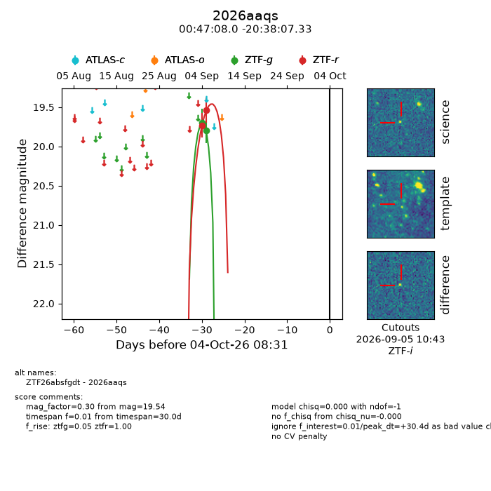
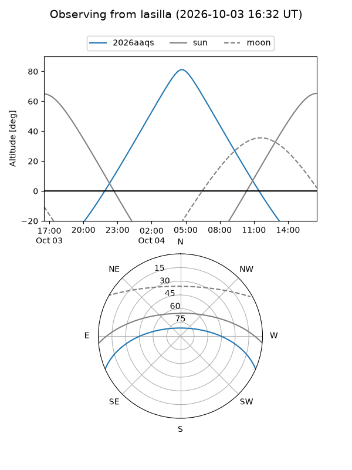
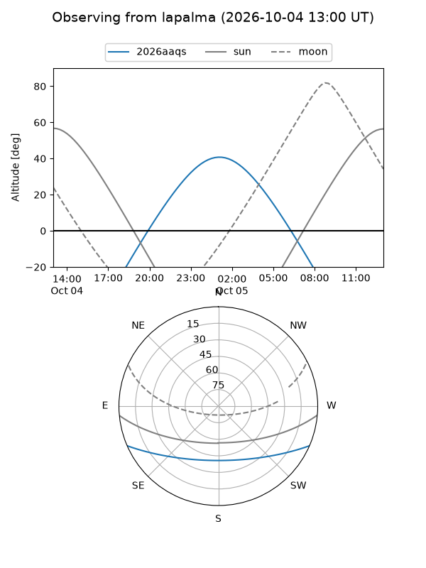
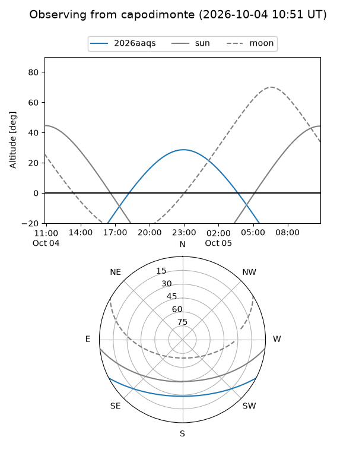
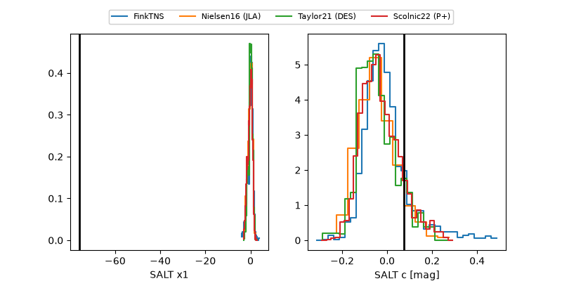

2026aaqs
Target 2026aaqs at 2026-10-04 08:33
Aliases and brokers:
FINK-ZTF: ztf.fink-portal.org/ZTF26absfgdt
Lasair-ZTF: lasair-ztf.lsst.ac.uk/objects/ZTF26absfgdt
ALeRCE-ZTF: alerce.online/object/ZTF26absfgdt
YSE-PZ: ziggy.ucolick.org/yse/transient_detail/2026aaqs
TNS name: wis-tns.org/object/2026aaqs
Direct TNS query: direct search
alt names
ZTF26absfgdt (ztf,fink_ztf)
2026aaqs (tns,yse)
Coordinates:
equatorial (ra, dec) = 11.7834,-20.63537
equatorial (HMS+DMS) = 00:47:08.01,-20:38:07.33
galactic (l, b) = (114.0915,-83.43311)
Flags:
TNS type: nan
peak dt: +30.4
Photometry:
last ztfg=19.80, ztfr=19.54
2 ztfg, 2 ztfr detections
Lightcurve

Visibility



Additional plots
